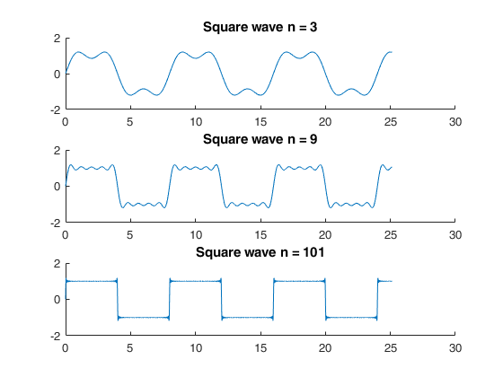
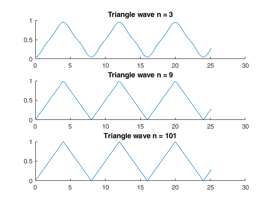
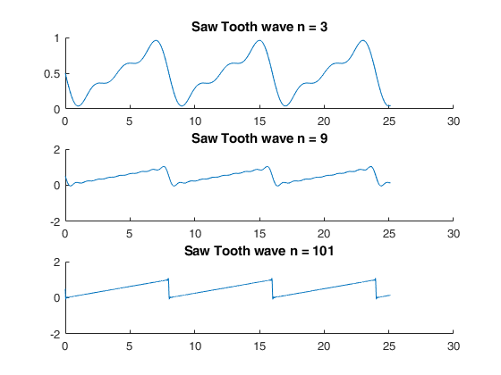

ELEN110L - Lab4: Fourier Series
Thomas Heckman, Fernando Guerra 5/3/18
The goal of this lab is to gain a futher understanding of Fourier Series and to use our knowledge of manipulating exponentials
Contents
Initial conditions
t = 0 : 0.01 : 8*pi;
Square Wave
figure(1) % // n = 3 // sqr = 0; %Initial conditions m = 3; for n=-m:2:m %For loop as infinite sum C = (-1i)*(2)*(1/(pi*n)); %updating Cn sqr = sqr + C*exp(1i*2*pi*n*t*1/8); %summing Cn end subplot(3,1,1) %plotting sum hold on title('Square wave n = 3') plot(t,sqr) hold off % // n = 9 // sqr = 0; m = 9; for n=-m:2:m C = (-1i)*(2)*(1/(pi*n)); sqr = sqr + C*exp(1i*2*pi*n*t*1/8); end subplot(3,1,2) hold on title('Square wave n = 9') plot(t,sqr) hold off % // n = 101 // sqr = 0; m = 101; for n=-m:2:m C = (-1i)*(2)*(1/(pi*n)); sqr = sqr + C*exp(1i*2*pi*n*t*1/8); end subplot(3,1,3) hold on title('Square wave n = 101') plot(t,sqr) hold off
Warning: Imaginary parts of complex X and/or Y arguments ignored Warning: Imaginary parts of complex X and/or Y arguments ignored Warning: Imaginary parts of complex X and/or Y arguments ignored
Triangle Wave
figure(2) % // n = 3 // tri = 1/2; m = 3; for n=-m:2:m C = (-2)*(1/(pi*n)^2); tri = tri + C*exp(1i*2*pi*n*t*1/8); end subplot(3,1,1) hold on title('Triangle wave n = 3') plot(t,tri) hold off % // n = 9 // tri = 1/2; m = 9; for n=-m:2:m C = (-2)*(1/(pi*n)^2); tri = tri + C*exp(1i*2*pi*n*t*1/8); end subplot(3,1,2) hold on title('Triangle wave n = 9') plot(t,tri) hold off % // n = 101 // tri = 1/2; m = 101; for n=-m:2:m C = (-2)*(1/(pi*n)^2); tri = tri + C*exp(1i*2*pi*n*t*1/8); end subplot(3,1,3) hold on title('Triangle wave n = 101') plot(t,tri) hold off
Warning: Imaginary parts of complex X and/or Y arguments ignored Warning: Imaginary parts of complex X and/or Y arguments ignored Warning: Imaginary parts of complex X and/or Y arguments ignored
Saw Tooth Wave
figure(3) % // n = 3 // saw = 1/2; m = 3; for n=-m:1:m C = (1i)*(1/(2*pi*n)); saw = saw + C*exp(1i*2*pi*n*t*1/8); end subplot(3,1,1) hold on title('Saw Tooth wave n = 3') plot(t,saw) hold off % // n = 3 // saw = 1/2; m = 9; for n=-m:1:m C = (1i)*(1/(2*pi*n)); saw = saw + C*exp(1i*2*pi*n*t*1/8); end subplot(3,1,2) hold on title('Saw Tooth wave n = 9') plot(t,saw) hold off % // n = 101 // saw = 1/2; m = 101; for n=-m:1:m C = (1i)*(1/(2*pi*n)); saw = saw + C*exp(1i*2*pi*n*t*1/8); end subplot(3,1,3) hold on title('Saw Tooth wave n = 101') plot(t,saw) hold off
Warning: Imaginary parts of complex X and/or Y arguments ignored Warning: Imaginary parts of complex X and/or Y arguments ignored Warning: Imaginary parts of complex X and/or Y arguments ignored